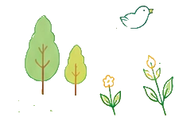
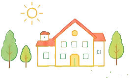

のびのび、
いっしょに。
お知らせ
NEWS※ お知らせは掲載イメージです
かみのてが選ばれている、3つの理由

園で過ごす、いつもの一日
あそび、たべて、休んで。その子のペースで、のびのびと過ごします。
登園
おうちの方と一緒に、順次登園します。
朝のあそび
好きなあそびを見つけて、のびのびと過ごします。
クラス活動
年齢に合わせた活動で、いろいろな経験をします。
給食
旬の食材を使った、やさしくておいしい給食です。
お昼寝
からだを休めて、ゆっくりとお昼寝します。
おやつ
手作りのおやつで、ほっとひと息。
夕方のあそび
友だちと一緒に、好きなあそびを楽しみます。
降園
おうちの方と一緒に、順次降園します。

みつける、
ひろがる、
だいすきがふえる。
※ 一日の流れは一例です 年齢や園によって異なります
知りたいことから、どうぞ
よくあるご質問
FAQ見学はできますか？＋
はい 園の見学をご希望の方は、事前にお問い合わせください 見学について相談する →
保育時間は何時から何時までですか？＋
かみのて保育園は7:00〜20:00、かみのて今渡保育園は7:30〜19:30（土・祝は7:30〜16:30）です 2つの園を比較する →
病児保育はどのような場合に利用できますか？＋
病気や体調不良で集団保育が難しいお子さまが対象です 事前登録・医師の診療情報提供書・電話予約が必要です 病児保育のご案内 →

